This set explores shower girl cozy mood through cinematic aesthetics and playful tone under window light. Compositions use rule-of-thirds with nature scene, keeping focus clear and tidy. Details like streetwear styling and balanced colors make browsing easy.
Browse shower images. Page 2 of curated shower-style portrait collection.
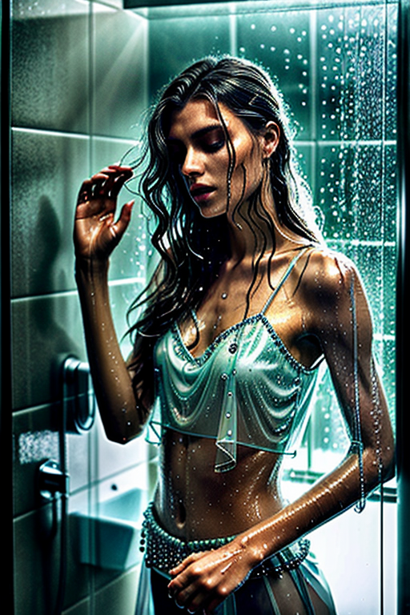 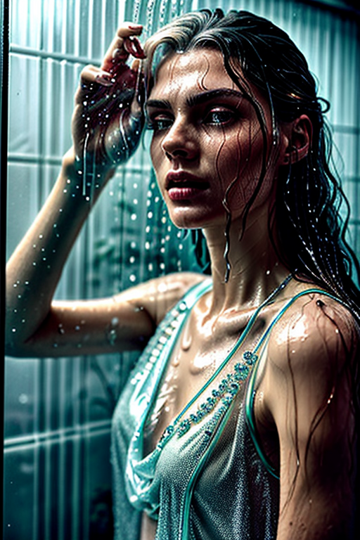
 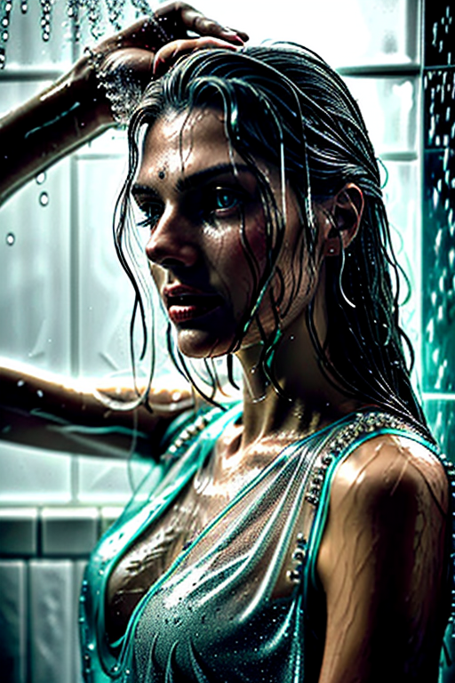
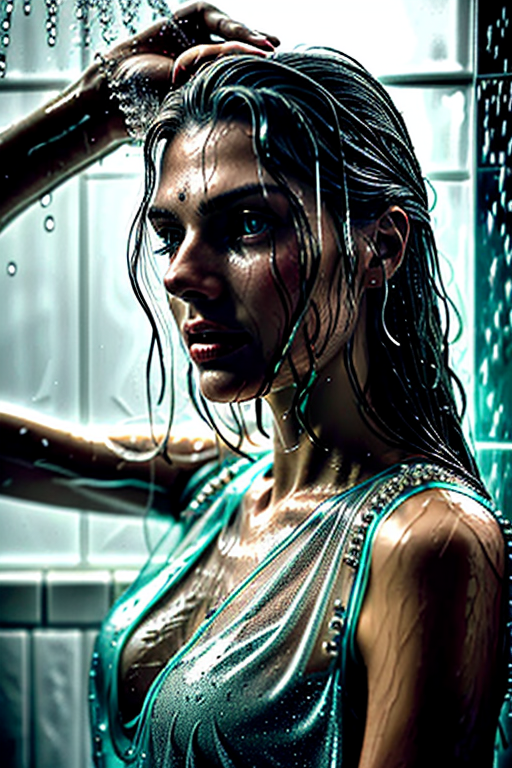
 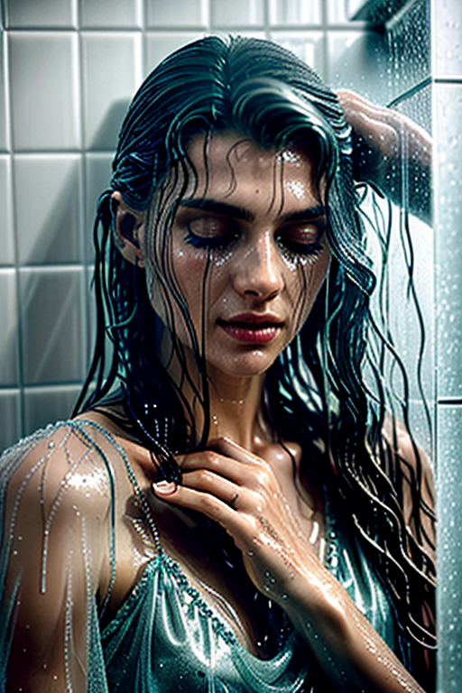
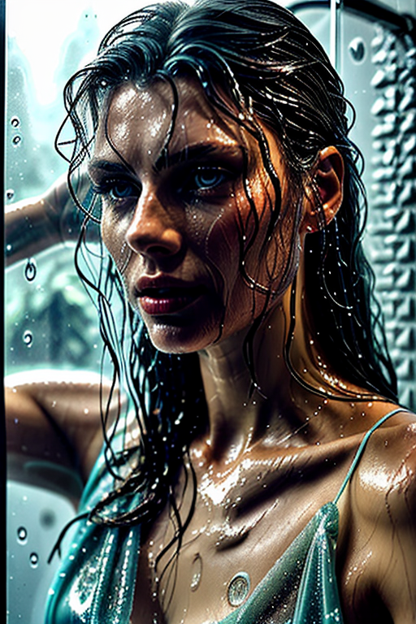
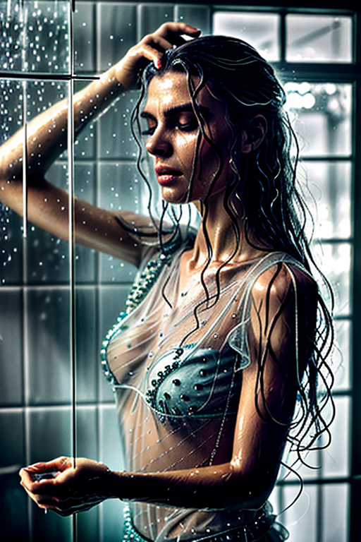
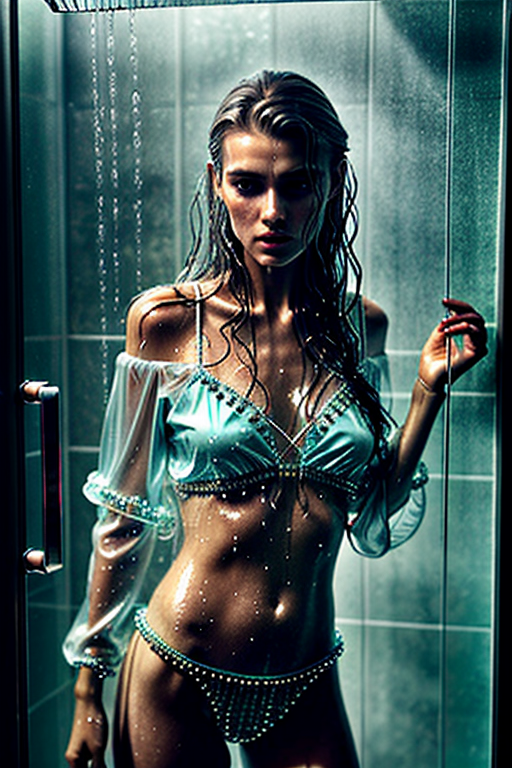
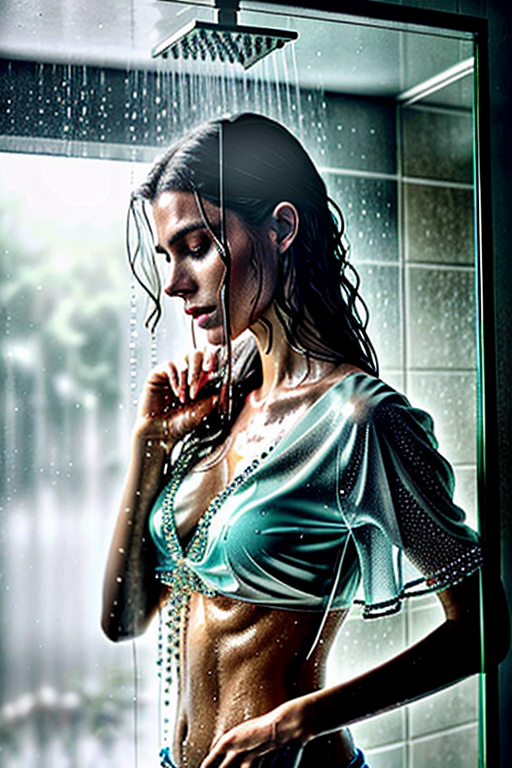
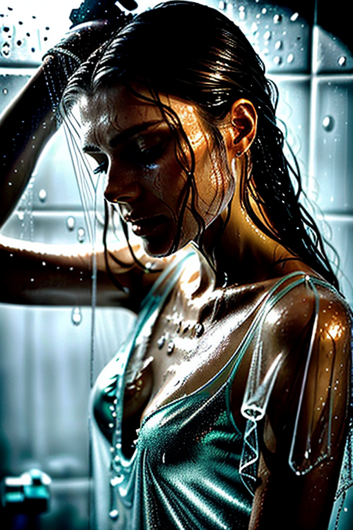
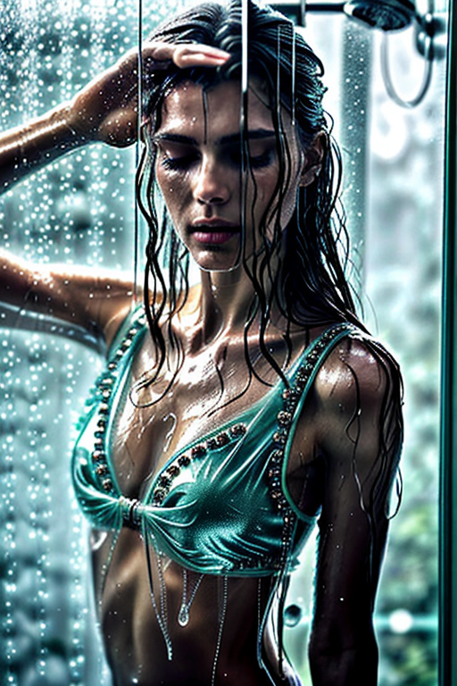
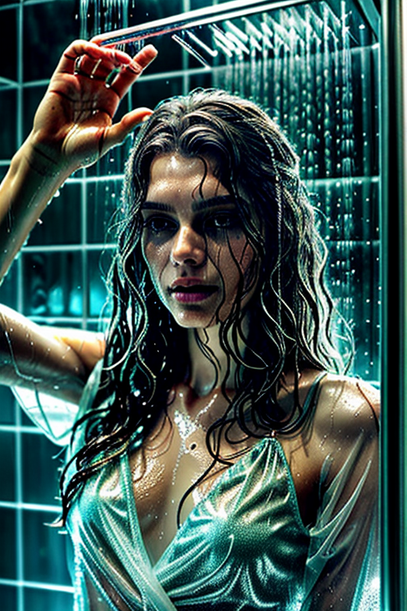
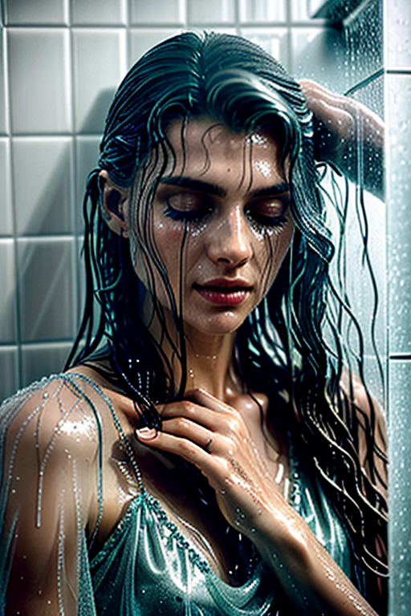
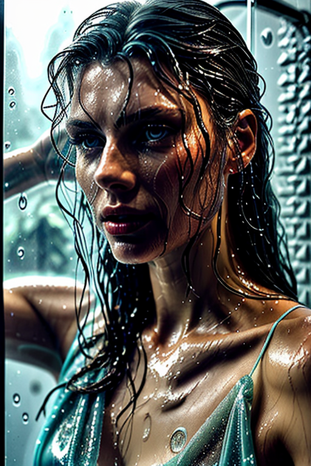
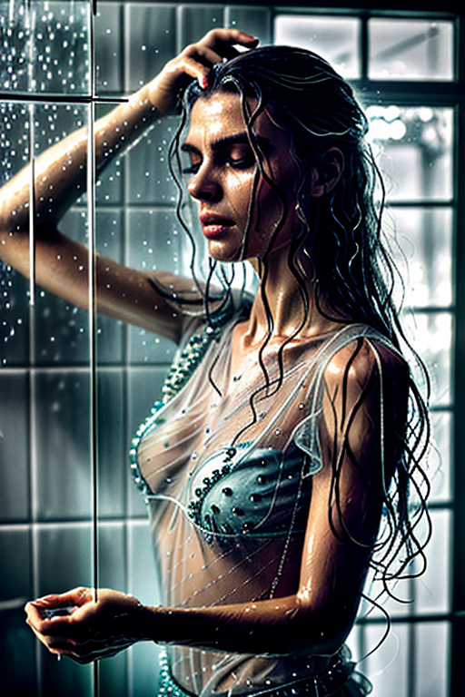
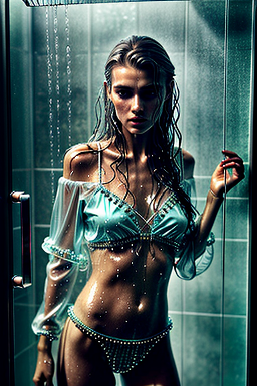
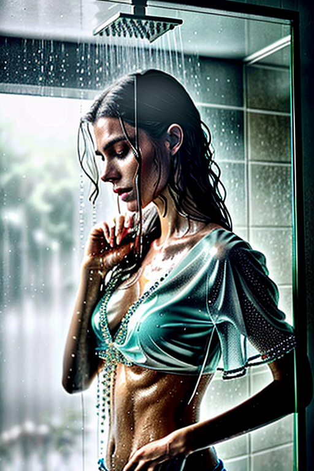
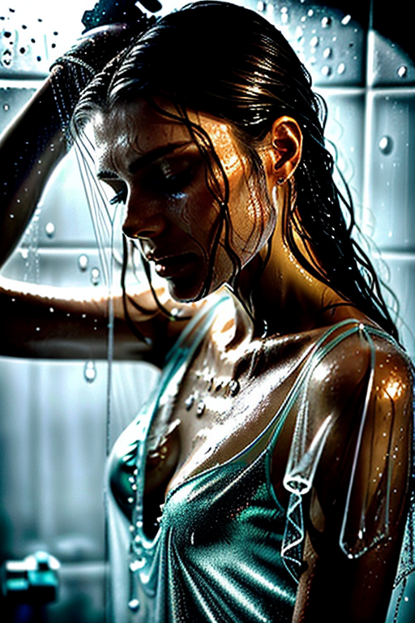
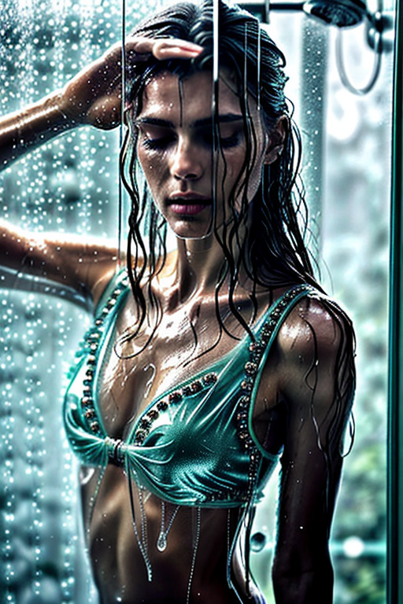
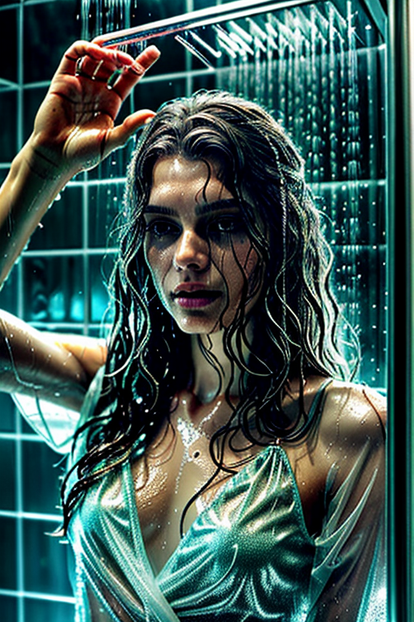
Here we highlight page2, aiming for clean structure, quick scanning, and useful context. Internal navigation leads to related items with comparable tone or composition. This reduces bounce and supports exploration within the same theme. Internal navigation leads to related items with comparable tone or composition. This reduces bounce and supports exploration within the same theme. If you are comparing alternatives, keep an eye on subtle differences in framing, contrast, and color balance. Internal navigation leads to related items with comparable tone or composition. This reduces bounce and supports exploration within the same theme. The image aims to deliver a straightforward visual impression while keeping the file lightweight. A brief explanation clarifies the subject and lighting so visitors can quickly decide where to go next. For more context, browse related entries linked nearby; each page offers a slightly different angle to limit overlap.